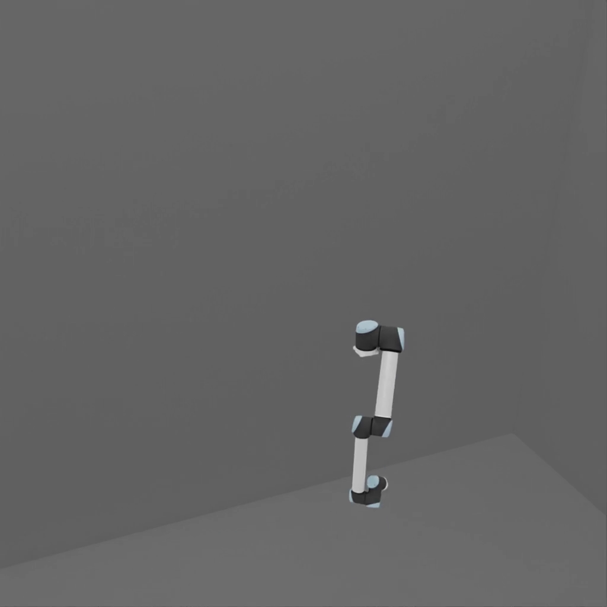

multi_joint_coordination (FET022 Driven Joints)#
Property |
Value |
|---|---|
Test name |
multi_joint_coordination |
Feature(s) |
|
Engine |
Kit / Isaac Sim (>=2024.2.0) |
Test version |
1.2.6 |
Wall-clock timeout |
3600 seconds |
Native Velocity Defaults#
A selected physical revolute joint’s native rad/s ceiling is unavailable as a timing hint when it matches the SDK float32-maximum degree/s default converted to radians/s, including float32 rounding. Ordinary authored ratings, linear coordinates and unknown units retain their values. Without a meaningful hint, the existing configured timing fallback applies; no physical ceiling is invented. This can change planned ramp duration without changing response tolerances or the required execution budget.
Nominal Initial Settling#
Before measuring the response, the phase requests complete ctx.step_one()
ticks for the configured initial settling interval, rounded up from
settle_seconds * physics_fps. Zero settling is allowed; FPS must be finite
and positive, and settling seconds finite and nonnegative. Invalid timing
configuration or failed ticks remain execution errors, not asset verdicts.
This is nominal requested tick time, not measured solver or wall-clock time;
render/capture work is separate. The processing-only ctx.physics_steps()
helper is not used to establish this interval.
Summary#
Ramps eligible driven joints together toward a target configuration and checks that each enters its target band during the observation window. Entries are remembered independently rather than requiring simultaneous final convergence.
Optional Motion Evidence#
One bounded history per exercised joint spans all coordination iterations. It
records measured position, the actual smoothstep command, the iteration’s final
goal, and absolute distance to that goal. Iteration/ramp/hold labels preserve
phase changes; ordinary sampling keeps every fourth observation. Times are
cumulative nominal commanded-step estimates and exclude the initial settle and
rendering ticks. Resolved revolute readbacks use radians. Prismatic tensor
scaling and unresolved identities remain unknown_native; recorded stage
meters-per-unit is context, not proof of the runtime tensor’s linear units.
The unchanged convergence check remembers whether each joint entered the goal band during an iteration; these plots do not claim simultaneous final convergence. Metadata records the existing tolerance’s configuration and applied native value, including its current radians-derived policy for linear joints. Capture markers refer to preceding retained observations, not exact rendered or encoded video times. Diagnostic recording failure is partial evidence, not an asset failure; older runners without motion hooks still execute normally.
Independent Control Ownership#
Declared mimic followers, passive coordinates and identified loop joints receive no independent position, target or velocity writes, including restoration where used. Their live motion remains determined by authored coupling/dynamics. Other independent coordinates retain the existing starting hold targets; eligibility, target selection and response criteria are unchanged. Sparse commands must use a genuine indexed runtime API: an unqualified backend stops with a setup/capability error before excitation, never an asset-response FAIL. Core requires the selected PhysX engine for this procedure. Newton’s separately owned implementation and backend qualification are not established by this page. No-applicable-joint cases still skip before control checks.
Required Runtime State#
Missing, non-finite or wrong-shaped runtime state needed by control or the verdict stops the test as a setup/runtime error, not conformance PASS or an evaluated asset-response FAIL. Optional extra motion readbacks remain nullable and can mark diagnostic evidence partial. Convergence criteria and configured failure policies are unchanged; target selection treats SDK unlimited angular limit sentinels as a bounded local excursion rather than commanding float32-extreme positions.
What Pass Guarantees#
A passing result confirms that each tested joint entered its configured target band at some observed point in each coordination iteration. The criterion remembers these entries independently; it does not establish simultaneous final convergence, absence of oscillation/coupling, or arbitrary trajectory stability.
What It Checks#
The test excludes passive joints, mimic followers and identified closed-loop joints, and requires at least two joints with safe bounded target ranges. Goals are fractions of each eligible range after the configured margin (default factors 0.3, 0.6 and 0.5 over three iterations). Each iteration issues smoothstep intermediate commands using a shared velocity-aware ramp, then retains the original post-ramp observation opportunity. Target positions and the remembered band-entry criterion are unchanged.
How It Works#
At each iteration, the measured starting pose seeds the smoothstep command for all eligible joints. Required position readback is checked after every commanded step. A set of joint names records goal-band entries; this is neither a final residual-error verdict nor an oscillation criterion. Per-iteration joint metrics record target, final observed position/error and whether the joint ever entered tolerance, reusing the last required readback. A final residual can remain large after an earlier entry; it does not independently change this historical verdict. Optional histories retain sampled command, final goal, position and error for diagnosis.
Spatial Safety Guard and Interrupted Evidence#
For a qualified connected articulation, setup freezes a conservative span reference from owned body geometry, authored joint-anchor offsets and finite prismatic travel. The span encloses legal configurations without depending on the volume of one narrow initial pose. The configured volume-margin factor is converted to its cube-root extent allowance; all live extents must remain finite and nonnegative. This is a safety canary, not a contact measurement or a proof of full authored-range reachability.
Unknown, disconnected or unsupported layouts retain the existing initial-box
volume proxy. mjc_guard_reference identifies the qualified reference or
fallback basis. A guard trip under either basis stops the attempted iteration
as an execution error. mjc_guard_abort and timing retain the concrete reason,
completed versus planned ticks and current reference; unfinished iterations
must not be reported as joint non-convergence or an established asset defect.
Available partial motion histories and existing capture frames are finalized
without extra physics steps. An optional export failure retains the original
guard error and is not permission to fabricate a complete trial.
This test does not attach a carrier fixture. Authored world constraints remain
in effect, and qualified standalone grippers may receive a temporary world pin.
Inspect scene_info.pinned_to_world, the configured gravity and the authored
constraints when interpreting motion; the setup does not guarantee a fixed
base for every robot.
Failure Cases#
Symptom |
Checks before attributing a cause |
|---|---|
A joint never enters its goal band |
Actual issued commands/readbacks, DOF mapping, imported limits/controls, units, coupling and available observation budget |
Spatial safety guard aborts observation |
Read |
Oscillation or different arrival times despite PASS |
Inspect histories and video; these are not independently rejected by the remembered band-entry criterion |
How to Fix#
Preserve the original asset, selected variant, plan and traces. Compare the commands and goal-band entries with the imported limits/controls, DOF mapping, coupling, units, fixed-base/gravity setup and backend support. A missed band alone does not isolate drive gains or force ratings as the cause. Do not apply generic gain increases, raise ratings or loosen criteria to force a pass; evidence-backed repair and tuning belong outside Evaluate.
Expected Result#

Eligible joints receive concurrent ramped commands. Review position/error histories and video to assess stalls, jitter and arrival timing. An overall pass establishes sampled individual band entries only; it does not independently confirm a smooth end-effector path or final held convergence.
Notes and Caveats#
Required restoration failures remain execution errors. If observation already
failed or was cancelled, its original cause remains primary; optional
diagnostic note lookup, formatting or delivery cannot replace it. SDK exception
objects without add_note remain supported. These changes do not alter targets,
timing, guard thresholds or the remembered individual band-entry criterion.
A positively established inventory of fewer than two independent motion
coordinates produces a clean skip with
fewer_than_two_independent_coordinates applicability evidence. A single-axis
gripper has no multi-joint coordination behavior to assess. This absence proof
requires the complete concrete owned asset composition, full population of its
subtree, and qualified inspection of sibling controllers and instance proxies.
Unloaded, undefined or abstract owned content and failed inventory queries
leave the proof unavailable. Any stage composition error also conservatively
withholds proof; it does not attribute an outside-asset error to the asset or
create asset FAIL. Complete composition
alone does not make a legacy non-proxy detector exhaustive; cached passive or
standalone classifications from partial inspection cannot qualify the marker.
The original skip stays unmarked when that proof is unavailable, so the report
shows Could not assess for the test. Eligibility, commands and response criteria
are unchanged. If at least two coordinates exist but fewer than two safe ranges
can be qualified, execution stops with NO VERDICT; missing prerequisites do not
establish inapplicability.
Angular configuration defaults are 1 degree here and 5 degrees for state-accuracy. These are test policies, not a guarantee of arbitrary trajectory tracking or a qualified linear-joint tolerance.